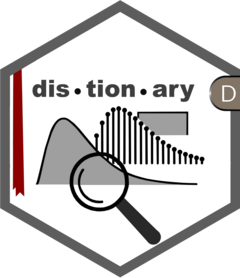

Algorithm to Compute a Directional Inverse
Source:R/eval_from_network-quantile.R
directional_inverse.RdCalculates the smallest value for which a function f
evaluates to be greater than or equal to y – that is,
the left inverse of f at y.
Arguments
- distribution
A distribution having access to a cdf.
- p
Single value for which to calculate the left inverse.
- low, high
Single numeric values forming a range within which to search for the solution.
- tol, maxiter
Tolerance (a small positive number) and maximum number of iterations
- direction
One of
"left"for calculating left-inverse, or"right"for calculating right-inverse.
Details
This algorithm works by progressively cutting the specified range in half, moving into the left or right half depending on where the solution is.
Examples
d <- distribution(cdf = \(x) pmin(pmax(x, 0), 1))
distionary:::directional_inverse(
d, p = 0.2, low = 0, high = 1, tol = 1e-9, maxiter = 200L,
direction = "left"
)
#> [1] 0.2